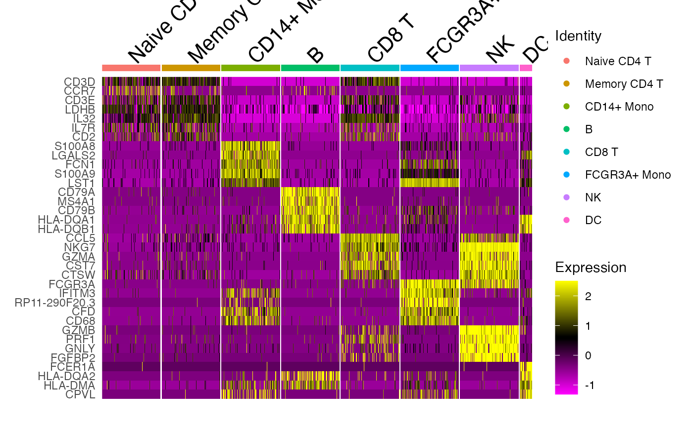

vignettes/articles/Helpers_and_Utilities.Rmd
Helpers_and_Utilities.RmdscCustomize has several helper functions to simplify/streamline common tasks in scRNA-seq analysis. Let’s load packages and raw data object for this tutorial.
# Load Packages
library(ggplot2)
library(dplyr)
library(magrittr)
library(patchwork)
library(Seurat)
library(scCustomize)
pbmc <- pbmc3k.SeuratData::pbmc3kWe’ll add some random meta data variables to pbmc data form use in
this vignette. See below for usage for scCustomize function
Map_New_Meta.
pbmc$sample_id <- sample(c("sample1", "sample2", "sample3", "sample4", "sample5", "sample6"), size = ncol(pbmc),
replace = TRUE)
pbmc <- Map_New_Meta(seurat_object = pbmc, from = "sample_id", new_col = "Batch", sample1 = "Batch1",
sample2 = "Batch1", sample3 = "Batch1", sample4 = "Batch2", sample5 = "Batch2", sample6 = "Batch2")One the first steps after creating object if often to calculate and add a number of different QC metrics at the cell level.
To simplify the process of adding cell-level QC metrics scCustomize contains a wrapper function which can be customized to add all or some of the available QC metrics. The functions have built-in support for large number of default species and support for both gene symbols or Ensembl IDs.
The default parameters of the function
Add_Cell_QC_Metrics will add:
pbmc <- Add_Cell_QC_Metrics(seurat_object = pbmc, species = "human")For more details on cell QC metrics and the functions available in scCustomize please see Object QC Vignette. For details on plotting functions associated with QC metrics see QC Plotting vignette.
scCustomize contains a set of functions to aid in use of meta data both within and outside of objects.
Fetch_Meta() functions as simple getter function to
obtain meta data from object and return data.frame.
meta_data <- Fetch_Meta(object = pbmc)
head(meta_data, 10)| orig.ident | nCount_RNA | nFeature_RNA | seurat_annotations | sample_id | Batch | |
|---|---|---|---|---|---|---|
| AAACATACAACCAC | pbmc3k | 2419 | 779 | Memory CD4 T | sample1 | Batch1 |
| AAACATTGAGCTAC | pbmc3k | 4903 | 1352 | B | sample3 | Batch1 |
| AAACATTGATCAGC | pbmc3k | 3147 | 1129 | Memory CD4 T | sample6 | Batch2 |
| AAACCGTGCTTCCG | pbmc3k | 2639 | 960 | CD14+ Mono | sample3 | Batch1 |
| AAACCGTGTATGCG | pbmc3k | 980 | 521 | NK | sample6 | Batch2 |
| AAACGCACTGGTAC | pbmc3k | 2163 | 781 | Memory CD4 T | sample2 | Batch1 |
| AAACGCTGACCAGT | pbmc3k | 2175 | 782 | CD8 T | sample1 | Batch1 |
| AAACGCTGGTTCTT | pbmc3k | 2260 | 790 | CD8 T | sample5 | Batch2 |
| AAACGCTGTAGCCA | pbmc3k | 1275 | 532 | Naive CD4 T | sample2 | Batch1 |
| AAACGCTGTTTCTG | pbmc3k | 1103 | 550 | FCGR3A+ Mono | sample6 | Batch2 |
While cell-level meta data is helpful in some situations often all
that is required is sample-level meta data. This can easily be extracted
and filtered using Extract_Sample_Meta().
sample_meta <- Extract_Sample_Meta(object = pbmc, sample_name = "sample_id")| orig.ident | seurat_annotations | sample_id | Batch | |
|---|---|---|---|---|
| 1 | pbmc3k | Memory CD4 T | sample1 | Batch1 |
| 2 | pbmc3k | Memory CD4 T | sample2 | Batch1 |
| 3 | pbmc3k | B | sample3 | Batch1 |
| 4 | pbmc3k | Naive CD4 T | sample4 | Batch2 |
| 5 | pbmc3k | CD8 T | sample5 | Batch2 |
| 6 | pbmc3k | Memory CD4 T | sample6 | Batch2 |
As you can see by default Extract_Sample_Meta removes a
default set of columns (see documentation) which do not provide
meaningful sample-level information (e.g., nFeature_RNA). However, you
may want to remove other columns too. This can be achieved using either
positive or negative selection using variables_include or
variables_exclude parameters.
sample_meta <- Extract_Sample_Meta(object = pbmc, sample_name = "sample_id", variables_exclude = c("nFeature_RNA",
"nCount_RNA", "seurat_annotations", "orig.ident"))| sample_id | Batch | |
|---|---|---|
| 1 | sample1 | Batch1 |
| 2 | sample2 | Batch1 |
| 3 | sample3 | Batch1 |
| 4 | sample4 | Batch2 |
| 5 | sample5 | Batch2 |
| 6 | sample6 | Batch2 |
While some original number columns are not valid at sample-level it
can be valuable to get summary information for those variables. This can
be achieved by merging outputs with Median_Stats
function.
sample_meta <- Extract_Sample_Meta(object = pbmc, sample_name = "sample_id", variables_exclude = c("nFeature_RNA",
"nCount_RNA", "seurat_annotations", "orig.ident"))
sample_median <- Median_Stats(seurat_object = pbmc, group.by = "sample_id")
sample_merged <- right_join(x = sample_meta, y = sample_median)| sample_id | Batch | Median_nCount_RNA | Median_nFeature_RNA | |
|---|---|---|---|---|
| 1 | sample1 | Batch1 | 2152.0 | 806.0 |
| 2 | sample2 | Batch1 | 2177.0 | 809.0 |
| 3 | sample3 | Batch1 | 2255.0 | 827.5 |
| 4 | sample4 | Batch2 | 2213.0 | 816.0 |
| 5 | sample5 | Batch2 | 2178.5 | 808.5 |
| 6 | sample6 | Batch2 | 2209.0 | 815.0 |
| 7 | Totals (All Cells) | NA | 2196.0 | 816.0 |
scCustomize provides easy function to add sample-level meta data to object without the need to first convert it to cell-level meta data. This makes adding meta data from summary or supplemental tables to cell level object data very easy.
In order to add meta data you will need to specify:
@meta.data column that matches
sample-level meta data (often “orig.ident”).This is example command:
obj <- Add_Sample_Meta(seurat_object = obj, meta_data = sample_meta, join_by_seurat = "orig.ident",
join_by_meta = "sample_id")In addition to adding sample level meta data directly scCustomize
also contains helper function Map_New_Meta to create new
meta.data variable based on an existing variable. For instance, mapping
a new column called “Treatment” on the basis on sample ID.
pbmc <- Map_New_Meta(seurat_object = pbmc, from = "sample_id", new_col = "Treatment", sample1 = "Treated",
sample2 = "Control", sample3 = "Control", sample4 = "Treated", sample5 = "Treated", sample6 = "Control")
new_meta <- Extract_Sample_Meta(pbmc, sample_col = "sample_id")| orig.ident | seurat_annotations | sample_id | Batch | Treatment | |
|---|---|---|---|---|---|
| 1 | pbmc3k | Memory CD4 T | sample1 | Batch1 | Treated |
| 2 | pbmc3k | Memory CD4 T | sample2 | Batch1 | Control |
| 3 | pbmc3k | B | sample3 | Batch1 | Control |
| 4 | pbmc3k | Naive CD4 T | sample4 | Batch2 | Treated |
| 5 | pbmc3k | CD8 T | sample5 | Batch2 | Treated |
| 6 | pbmc3k | Memory CD4 T | sample6 | Batch2 | Control |
Starting in Seurat V5 each assay now possess it’s own meta.data slot which is feature-level meta data. During course of normal analysis this is where information on variable features is stored. However, we can also use it to store alternate feature names, in most cases this is Ensembl IDs matching the symbols used in object creation/analysis.
scCustomize provides the function Add_Alt_Feature_ID()
to automatically match and add these features using the same files used
in object creation. Users only need to supply either path to the
features.tsv.gz file or the hdf5 file produced from Cell Ranger
output.
# Using features.tsv.gz file
obj <- Add_Alt_Feature_ID(seurat_object = obj, features_tsv = "sample01/outs/filtered_feature_bc_matrix/features.tsv.gz",
assay = "RNA")
# Using hdf5 file
obj <- Add_Alt_Feature_ID(seurat_object = obj, hdf5_file = "sample01/outs/outs/filtered_feature_bc_matrix.h5",
assay = "RNA")NOTE: If using features.tsv.gz file the file from either filtered or raw outputs can be used as they are identical.
NOTE: If using hdf5 file the file from either filtered_feature_bc or raw_feature_bc can be used as the features slot is identical. Though it is faster to load filtered_feature_bc file due to droplet filtering.
scCustomize also makes forward-facing a number of utilities that are used internally in functions but may also have utility on their own.
Feature_Present() to check for features.
Feature_Present is fairly basic function to check if
feature exists in data. It can be used with Seurat or LIGER objects as
well as generic data formats (Matrix, data.frame, tibble).
In addition to some warning messages Feature_Present
returns a list with 3 entries when run:
bad_features > 0 then
Feature_Present will convert
the gene listbad_features` to all upper case and to
sentence case and check against all possible features to see if wrong
case was provided.
# Example gene list with all examples (found genes, wrong case (lower) and misspelled (CD8A
# forgetting to un-shift when typing 8))
gene_input_list <- c("CD14", "CD3E", "Cd4", "CD*A")
genes_present <- Feature_Present(data = pbmc, features = gene_input_list)## Warning: The following features were omitted as they were not found:
## ℹ Cd4 and CD*A## Warning: NOTE: However, the following features were found: CD4
## ℹ Please check intended case of features provided.Now let’s look at the output:
genes_present## $found_features
## [1] "CD14" "CD3E"
##
## $bad_features
## [1] "Cd4" "CD*A"
##
## $wrong_case_found_features
## [1] "CD4"By default Feature_Present has 3 sets of
warnings/messages it prints to console when it finds issues. If using
the function yourself on its own or wrapped inside your own function and
you prefer no messages each of these can be toggled using optional
parameters.
case_check_msg prints and list of features if alternate
case features are found in data.omit_warn prints warning and list of all features not
found in data.print_msg prints message if all features in
gene_list are found in data.In order to keep run times down and support offer greater support for
offline use Feature_Present does not include a check for
updated gene symbols. If you’re dataset is from human cells/donors you
can simply supply the not found features from
Feature_Present to Seurat’s UpdateSymbolList
function.
gene_input_list <- c("CD14", "CD3E", "Cd4", "CD*A", "SEPT1")
genes_present <- Feature_Present(data = pbmc, features = gene_input_list)## Warning: The following features were omitted as they were not found:
## ℹ Cd4 and CD*A## Warning: NOTE: However, the following features were found: CD4
## ℹ Please check intended case of features provided.
check_symbols <- UpdateSymbolList(symbols = genes_present[[2]], verbose = TRUE)## Warning: No updated symbols foundIt can often be advantageous to merge raw data before creating
analysis objects vs creating lots of objects and merging them all later.
scCustomize features a modified version of the internal LIGER function
MergeSparseDataAll().
Merge_Sparse_Data_All() will combine a list of sparse
matrices and return single sparse matrix. Additionally, by specifying
the add_cell_ids parameter you can specify a prefix to be
added to the barcodes from each entry in the list (using “_” as
delimiter).
This function can be especially useful when combined with any of the
scCustomize’s Read_ data functions which automatically
return named lists of matrices and the ability to specify sample
orig.ident when creating Seurat objects. See Read
& Write Vignette for more info on the data import functions.
# Read in data
GEO_10X <- Read10X_GEO(data_dir = "assets/GSE152183_RAW_Marsh/")
# Merge data and add sample prefix
GEO_10X_merged <- Merge_Sparse_Data_All(matrix_list = GEO_10X, add_cell_ids = names(GEO_10X))
# Create Seurat Object and specify orig.ident location
GEO_10X_Seurat <- Seurat::CreateSeuratObject(counts = GEO_10X_merged, names.field = 1, names.delim = "_",
min.features = 200, min.cells = 5)Sometimes it can be advantageous to create a list of multiple Seurat Objects in order to run similar pipeline on all objects in loop.
NOTE: This function will likely be deprecated in near future given the updates to Seurat object structure and support for assays containing different sets of features and layers within assays.
To facilitate ease in merging such lists into single object
scCustomize contains simple wrapper Merge_Seurat_List that
uses purrr::reduce() to merge all objects in list into
single combined object
list_of_objects <- list(obj1, obj2, obj2, ..., obj10)
merged_seurat <- Merge_Seurat_List(list_seurat = list_of_objects)
# Can also add sample specific ids to each object during the merge
cell_ids <- c("sample1", "sample2", "sample3", ..., "sample10")
merged_seurat <- Merge_Seurat_List(list_seurat = list_of_objects, add.cell.ids = cell_ids)Seurat V5 objects now have the ability to split within the object
into layers. However, I find that the syntax to do this is not the most
intuitive and can be simplified with a new simple wrapper function:
Split_Layers()
pbmc <- Split_Layers(seurat_object = pbmc, split.by = "sample_id")## • Splitting layers within assay: RNA into 6 parts by "sample_id"
## ℹ RNA is not Assay5, converting to Assay5 before splitting.Split_Layers() defaults to “RNA” assay but can be used
for any assay present in object (users should check whether splitting
assay other than “RNA” is valid before proceeding).
scCustomize also contains functions to make random downsampling of object or getting a random downsampling of cells easy.
To get a random downsampling of cells you can use the
Random_Cells_Downsample function. This can be especially
helpful to create a subset of cells to use for plotting so that
different conditions are equally represented in the plot.
One use case for getting a random downsample of cells is when plotting a cell-level heatmap. In this case the most important information being conveyed is the pattern of gene expression not the number of cells in each cluster. To aid in this visualization we can randomly downsample the number of cells to be equal across clusters.
For this example we will remove the platelets from pbmc3k object as there are only a few of them and then plot heatmap of marker genes.
pbmc_noplatelet <- subset(pbmc, idents = "Platelet", invert = TRUE)First lets look at the number of cells in each cluster.
cells_per_cluster <- Cluster_Stats_All_Samples(seurat_object = pbmc_noplatelet)| Cluster | Number | Freq | pbmc3k | pbmc3k_% | |
|---|---|---|---|---|---|
| 1 | Naive CD4 T | 697 | 26.562500 | 697 | 26.562500 |
| 2 | Memory CD4 T | 483 | 18.407012 | 483 | 18.407012 |
| 3 | CD14+ Mono | 480 | 18.292683 | 480 | 18.292683 |
| 4 | B | 344 | 13.109756 | 344 | 13.109756 |
| 5 | CD8 T | 271 | 10.327744 | 271 | 10.327744 |
| 6 | FCGR3A+ Mono | 162 | 6.173781 | 162 | 6.173781 |
| 7 | NK | 155 | 5.907012 | 155 | 5.907012 |
| 8 | DC | 32 | 1.219512 | 32 | 1.219512 |
| 9 | Total | 2624 | 100.000000 | 2624 | 100.000000 |
Now with Random_Cells_Downsample we can either set a
number of cells per identity or we can tell it to get the a number of
cells per identity equal to size of the smallest identity.
downsample_min <- Random_Cells_Downsample(seurat_object = pbmc_noplatelet, num_cells = "min")However, 32 cells is pretty small for heatmap so lets get 100 cells
per identity. Since DCs only have 32 cells we will set
allow_lower = TRUE so that for any identities with less
than 100 cells it will return all of the cells in that identity.
downsample_150 <- Random_Cells_Downsample(seurat_object = pbmc_noplatelet, num_cells = 150, allow_lower = TRUE)Now let’s get the top 5 markers for each cluster and plot them.
cluster_markers <- FindAllMarkers(object = pbmc_noplatelet) %>%
Add_Pct_Diff()
top5 <- Extract_Top_Markers(marker_dataframe = cluster_markers, num_features = 5, rank_by = "pct_diff")
DoHeatmap(object = pbmc_noplatelet, features = top5, cells = downsample_150)
Seurat objects contain an extra empty slot that can be used to store
any extra information desired.
scCustomize contains two functions Store_Misc_Info_Seurat
and a wrapper around that function Store_Palette_Seurat to
make this process easy.
# Data can be vectors or data.frames
misc_info <- "misc_vector_dataframe_list_etc"
# Add data to the @misc slot in Seurat Object
pbmc <- Store_Misc_Info_Seurat(seurat_object = pbmc, data_to_store = misc_info, data_name = "misc_info_name")If you are storing a list in the @misc slot there is
additional parameter that dictates whether to store the information as a
list or whether to store each entry in the list separately.
# Create list
misc_info <- list("misc_item1", "misc_item2", etc)
# Store the list directly
pbmc <- Store_Misc_Info_Seurat(seurat_object = pbmc, data_to_store = misc_info, data_name = "misc_info_name",
list_as_list = TRUE)
# Store each entry in list as separate entity in `@misc` slot
pbmc <- Store_Misc_Info_Seurat(seurat_object = pbmc, data_to_store = misc_info, data_name = "misc_info_name",
list_as_list = FALSE)One of the most common times I use this function is to store color
palettes associated with clustering or subclustering.
To make it easier to remember function call in this situation
scCustomize contains a wrapper function
Store_Palette_Seurat.
# Data can be vectors or data.frames
annotated_color_palette <- c("color1", "color2", "color3", "etc")
# Add data to the @misc slot in Seurat Object
pbmc <- Store_Palette_Seurat(seurat_object = pbmc, palette = annotated_color_palette, palette_name = "Round01_Color_Pal")
# Then you can easily call that palette (with tab completion) when plotting without ever
# needing to reload the palette in current environment
DimPlot(object = pbmc, cols = pbmc@misc$Round01_Color_Pal)Sometimes, especially with public data, you may want to modify the cell barcode names before creating analysis object.
scCustomize contains a selection of functions to simplify this process:
Replace_Suffix can be used on single matrix/data.frame
or list of matrices/data.frames to modify to remove suffixes
# For single object
data_mod <- Replace_Suffix(data = raw_data, current_suffix = "-1", new_suffix = "-2")
# For list of objects containing same suffix
raw_data_list <- list(raw_data1, raw_data2, raw_data3, ..., raw_data10)
new_suffixes <- c("-1", "-2", "-3", ..., "-10")
data_mod <- Replace_Suffix(data = raw_data_list, current_suffix = "-1", new_suffix = new_suffixes)
# For list of objects containing different suffixes
raw_data_list <- list(raw_data1, raw_data2, raw_data3, ..., raw_data10)
old_suffixes <- c("-A", "-B", "-C", ..., "-J")
new_suffixes <- c("-1", "-2", "-3", ..., "-10")
data_mod <- Replace_Suffix(data = raw_data_list, current_suffix = old_suffixes, new_suffix = new_suffixes)Replace_Suffix can also be used to strip suffixes from
data
# For single object
data_mod <- Replace_Suffix(data = raw_data, current_suffix = "-1", new_suffix = "")scCustomize has 3 functions to facilitate changing the type of delimiters present in cell barcodes.
Change_Delim_Prefix() Change just the suffix
delimiter.Change_Delim_Suffix() Change just the prefix
delimiter.Change_Delim_All() Change all delimiters.These functions all take identical inputs and can be applied to either single matrix/data.frames or lists of matrices/data.frames.
data_mod <- Change_Delim_Prefix(data = raw_data, current_delim = ".", new_delim = "_")
data_mod <- Change_Delim_Suffix(data = raw_data, current_delim = ".", new_delim = "_")
data_mod <- Change_Delim_All(data = raw_data, current_delim = ".", new_delim = "_")scCustomize also contains number of helper functions that may be generally helpful in other R analyses and are not limited to scRNA-seq.
See vignette on Color Palettes for full details on stored palettes and palette plotting functions.
Sometimes it can be helpful to split a vector into chunks of
predetermined size or into X number of equally sized chunks. For this we
can use Split_Vector() and for random example lets use the
variable features from pbmc object.
all_var_features <- VariableFeatures(object = pbmc)
# Now we can split into vectors of 100 genes per vector
split_100_genes <- Split_Vector(x = all_var_features, chunk_size = 100)
lengths(split_100_genes)## 1 2 3 4 5 6 7 8 9 10 11 12 13 14 15 16 17 18 19 20
## 100 100 100 100 100 100 100 100 100 100 100 100 100 100 100 100 100 100 100 100
# Or we can split into 7 equally sized vectors
split_7_chunks <- Split_Vector(x = all_var_features, num_chunk = 7)
lengths(split_7_chunks)## 1 2 3 4 5 6 7
## 285 286 286 285 286 286 286The base R seq family of functions has a ton of uses.
However, due to the way numbers are ordered in R it can sometimes be
helpful to have preceding zeros in your number sequence in order to keep
things in numerical order (e.g., 01, 02, 03, instead of 1, 2, 3)
especially when naming files.
The scCustomize function seq_zeros() allows you to do
just that.
# provide total sequence length
seq_zeros(seq_length = 15)## [1] "01" "02" "03" "04" "05" "06" "07" "08" "09" "10" "11" "12" "13" "14" "15"
# provide sequence
seq_zeros(seq_length = 1:15)## [1] "01" "02" "03" "04" "05" "06" "07" "08" "09" "10" "11" "12" "13" "14" "15"By default the function will add 1 or more zeros depending on the
size of seq_length
## [1] "01" "02" "03" "04" "05"## [1] "01" "02" "03" "04" "05" "06"## [1] "001" "002" "003" "004" "005" "006"## [1] "0001" "0002" "0003" "0004" "0005" "0006"Users can also manually set the number of preceding zeros using the
num_zeros parameter.
seq_zeros(seq_length = 5, num_zeros = 3)## [1] "0001" "0002" "0003" "0004" "0005"